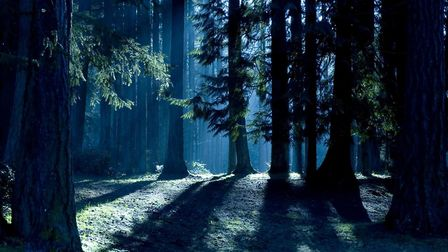

Alienspotten
Datum: Elke woensdagActiviteit:Een zoektocht naar UFO's in de lucht, neem een verre of sterre kijker mee
Beschrijving: Zie Meer informatie
De Spooktocht
Datum: Elke donderdagActiviteit: Een spookachtige tocht over het landgoed
Beschrijving:Meer info
Mid zomerwende
Datum:21 juniActiviteit: De Keltische vereniging
Beschrijving: Elk jaar op de langste dag van het jaar verzamelt de Keltische vereniging zich op landgoed de Fliergoed. Ze vieren hier het midden van de zomer met oude rituelen. Deelnemers overnachten vaak op de camping. Bezoekers van buitenaf zijn welkom. Reserveer wel vooraf om niet voor verassingen te komen. 
Halloween
Datum: 31 oktoberActiviteit: Een nacht van spoken en griezelen
Beschrijving: Elke Halloween hebben wij een kinderactiviteit. Vrijwilligers hebben zich in kostuum en schmink in het bos verstopt om kinderen aan het schrikken te maken. Spannend maar niet te eng. Aanvang 17:00. LET OP: De lichtjes in het bos zijn geen onderdeel van de activiteit. Iedereen moet om 23:30 weer bij de kampeerplek zijn. Vrijwilligers gezocht We zoeken nog vrijwilligers om de avond extra spannend te maken voor onze bezoekers.
Halloween
Datum: 31 oktoberActiviteit: Een nacht van spoken en griezelen
Beschrijving: Elke Halloween hebben wij een kinderactiviteit.
Vrijwilligers hebben zich in kostuum en schmink in het bos
verstopt om kinderen aan het schrikken te maken.
Spannend maar niet te eng.Aanvang 17:00. LET OP:
De lichtjes in het bos zijn geen onderdeel
van de activiteit.Iedereen moet om 23:30 weer bij
de kampeerplek zijn Vrijwilligers gezocht We zoeken nog vrijwilligers
om de avond extra spannend te maken voor onze bezoekers.
Midwinterfeest
Datum: 21 decemberActiviteit: De Keltische vereniging
Beschrijving: Elk jaar op de kortste dag van het jaar verzamelt
de Keltische vereniging zich op landgoed de Fliergoed.
Ze vieren hier het midden van de winter met oude rituelen.
Deelnemers overnachten vaak op de camping. Bezoekers van buitenaf zijn welkom.
Reserveer wel vooraf om niet voor verassingen te komen.